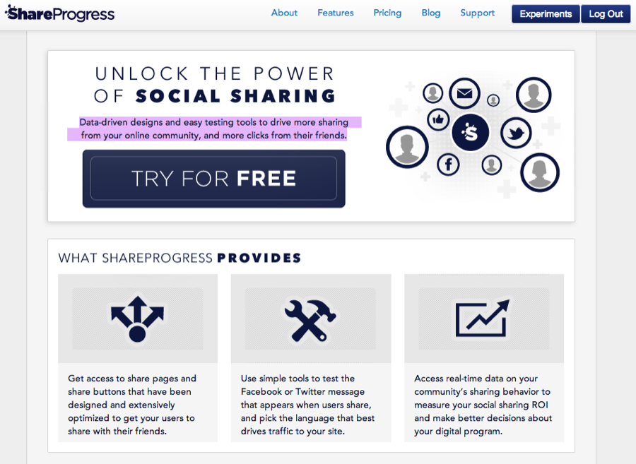
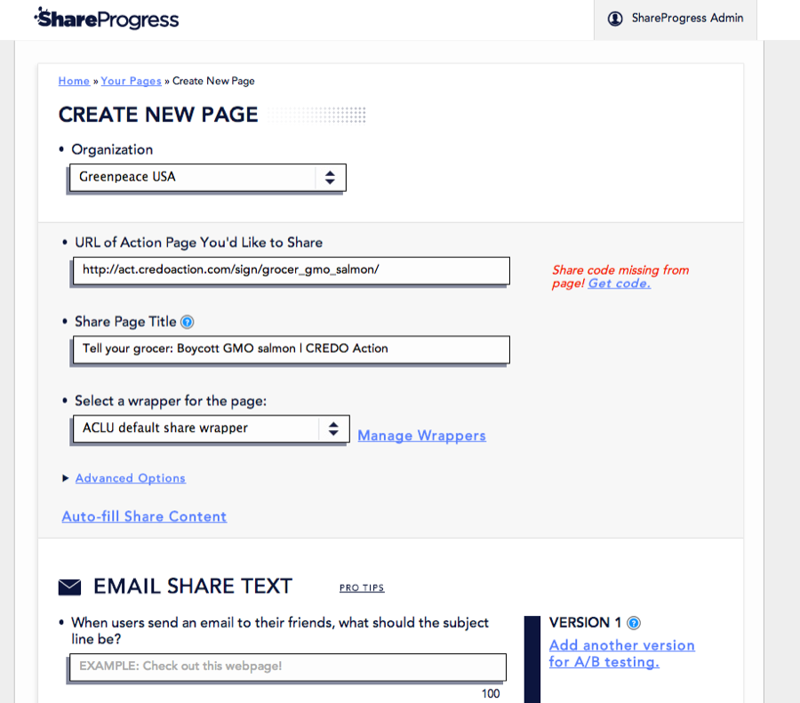
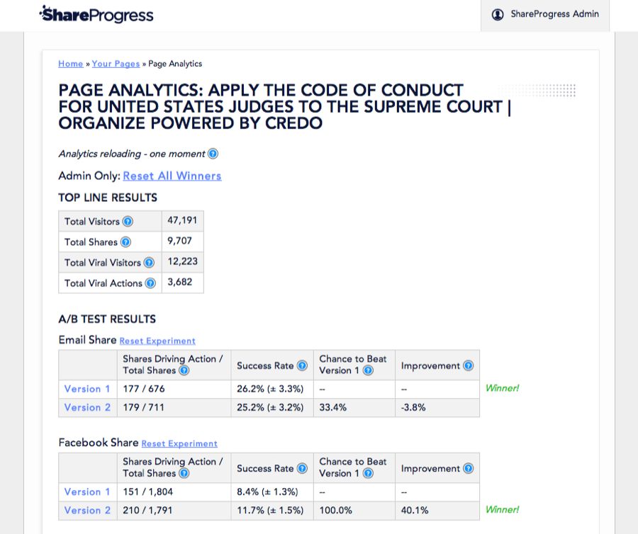
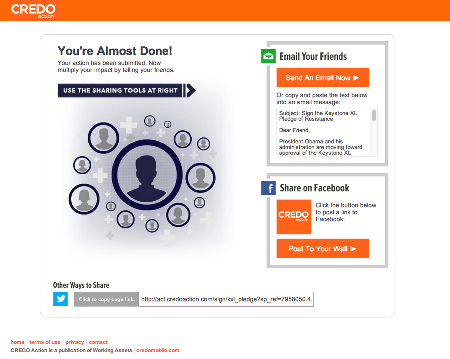

Specimen Nº 14 · Habitat II — Software & science
ShareProgress
Data-driven designs and easy testing tools to drive more sharing from your online community, and more clicks from their friends.
- First observed
- 2013
- With
- Jim Pugh, Kim Muñoz
ShareProgress is a progressive startup that helps groups maximise their social sharing. We do this by optimizing our Share Page's and buttons design and by providing users with tools to A/B test their social sharing messaging - letting them track their experiments in real-time.
Built and prototyped during a six month incubation at Credo Mobile - ShareProgress is growing steadily and is on track to serve over 3 million page views and 200,000 shares to our client's visitors; which include the Sierra Club, Emily's List, Planned Parenthood, the American Civil Liberties Union, and others. Includes a RESTful API that allows clients to manage page creation, management, and analytics.
Built in Ruby as a two part system that share a single database: the content delivery system is powered by Sinatra with backup from Cloudflare while Rails powers the client-management side. Additionally Stripe is used to manage client payment. Integrated testing is done with Capybara-Webkit and RSPEC on both the Sinatra and Rails system. Stylesheets are written in SASS with HAML templating and the many servers are hosted on Heroku.
Plates · from the field




Field notes